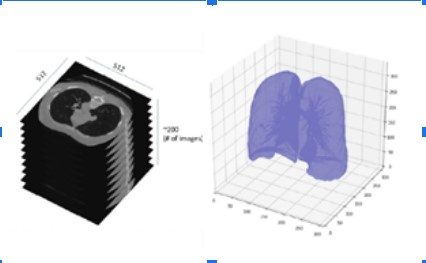
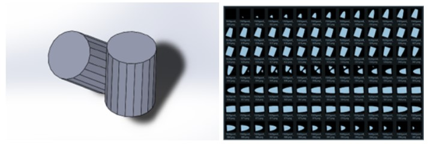
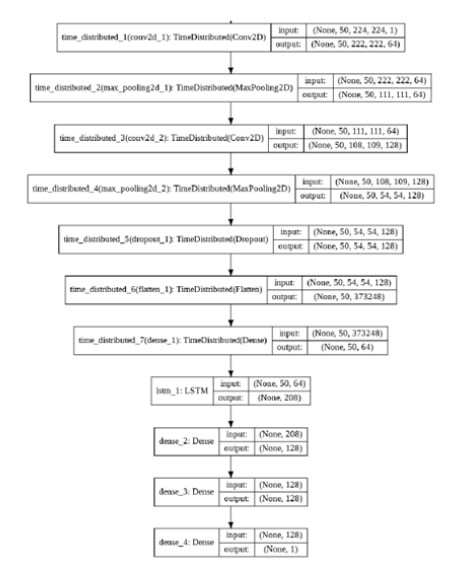
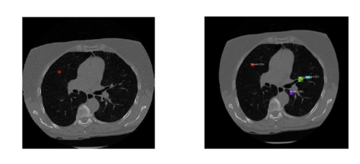

Lung Cancer detection using Computer Vision
The American Cancer Society estimates about 238,340 new cases of lung cancer in the US for 2023. Lung cancer diagnosis is done by an expert by studying the CT-Scans of a patient's lungs. However, diagnosis is usually subjective in nature, as it depends on how the expert views the abnormal cancer nodes. To remove this subjectivity, we worked on designing a Deep Learning model to provide an unequivocal judgment of if the nodes are malign and where they are in the scans.
Our methodology involved analyzing 3D models as 2D images, using Convolution Neural Network (CNN) model on each image, and then passing the features calculated to the Recurrent Neural Networks (RNN) or in particular Long-Short Term Memory (LSTM) to understand a relation between the layers.

Prototype
To prove that this idea would work, we decided to train a simpler model first, where we modeled 3D geometrical shapes with a large number of edges (20, 21, 22) using SOLIDWORKS and then sliced these models to generate 2D images. We trained the model to then distinguish between these models when they are input individually or as a group in the same scene. The accuracy was about 70% using Cross-Entropy loss and Adam Optimizer. The results were convincing to prove our idea could work.
 Main model
We then trained another model to account for the complexity of our main task. It would take each patient’s CT-scans and classify if they contained a malign lymph nodule. The accuracy of about 65% was achieved, using Cross-Entropy loss and Adam Optimizer.

Next step - Segmentation
In addition to classifying the scan, we also wished to indicate where the malign node is present in each layer. We decided to use Mask-RCNN which was the state of the art (SOTA) method to predict the location of the malign node. When the model would predict that there is a good probability of finding a malign node in the CT-Scans, Mask-RCNN model segmented out where they were located. Mask RCNN performs instance segmentation wherein per pixel prediction is carried out. It is suited for this application as it can extract features from a very minute image size. We can obtain the exact contour of the nodule rather than having a rectangular box drawn around them. This makes it easier for the radiologists to decide if the nodule is present or not and the detail of the size is crucial for decision making.
Conclusion
The model we built had reasonable accuracy on the predictions but needed to be much better to be deployed in the real world. The limitation was that we had sufficient access to malign lung cancer data (500 distinct patients) but insufficient data for benign cancer. We believe we were short of negative examples that could have helped the model understand the features of healthy lung cells.